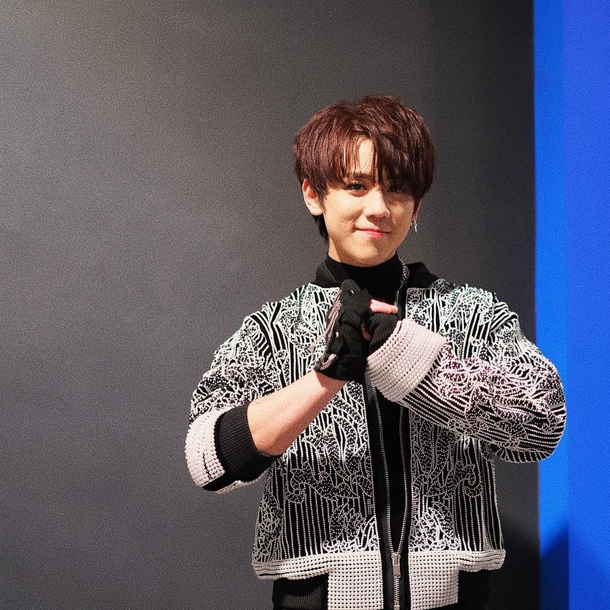

《全民造星1》冠軍姜濤，日前22歲生日，「姜糖」豪花近百萬為他登祝賀廣告，人氣爆燈的他，聲勢一時無兩。而《全民造星3》冠軍趙祥誠（Ben），憑折骨舞技驚四座，但至今作品未算多，兩位《造星》冠軍，人氣似乎仍有段距離。
同樣叫Ben的（歐陽偉豪Ben Sir）雖然是大台人，不過未知是否「同姓」三分親，對折骨Ben也特別留意，日前他在專頁上發文稱：「我唔明點解今年造星折骨Ben贏咗，但紅咗姜B？利申：兩個我都鍾意。」
Ben Sir的發文引來網民熱烈討論，有網民指因為觀眾緣，留言：「觀眾緣唔係人人有，姜濤性格好、態度好，樣子討好；加上佢反差極大：台上星味甚濃，表演親好似上咗身，台下就係好萌嘅小朋友，種種因素令到好多人鍾意佢」、「有時呢啲嘢講命水。Even 12個mirror成員之中都唔係個個好似姜濤咁多工作機會。」
而「當事人」折骨Ben也有留言給Ben Sir，他說：「各位，我會努力的，我的確有好多地方唔夠好，我會練下唱歌同做戲，總之咩都試下。本來我唔係為咗紅先開始跳舞，有人欣賞就夠了，始終我明白折骨舞唔係個個識欣賞，拎到冠軍最驚喜係我自己。但宜家我知道我有責任，要有d更高質素嘅表演同成就，先可以去代表香港嘅年輕人，姜濤講過，我哋會成為亞洲第一，我都相信我會係其中一個。
我會繼續努力落去，畀d時間我！BTW 我都鍾意Ben sir。」折骨Ben的留言獲不少網民鼓勵，大讚他「態度正確」。
- Ben Sir（歐陽偉豪）雖然是大台人，但對友台的全民造星亦十分留意，日前發文指「點解紅咗姜b？」。
 - 姜濤人氣高企，日前姜糖豪花近百萬落廣告為他慶祝22歲生日。
- 趙祥誠是今屆《造星》冠軍，但人氣卻仍未能姜濤相比。
- 趙祥誠留言指會繼續努力，並相信有份成為亞洲第一。